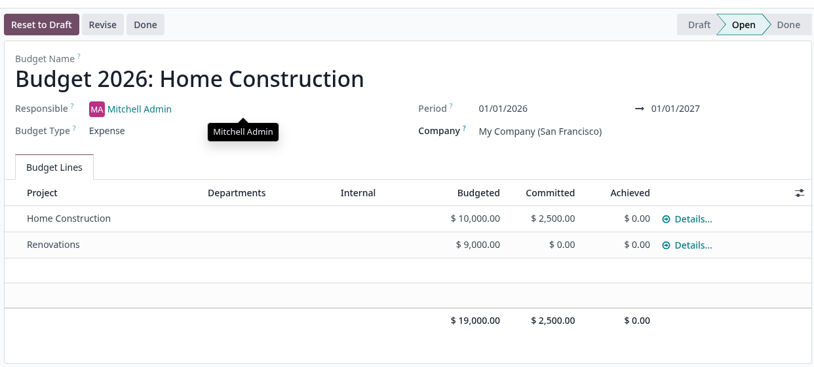
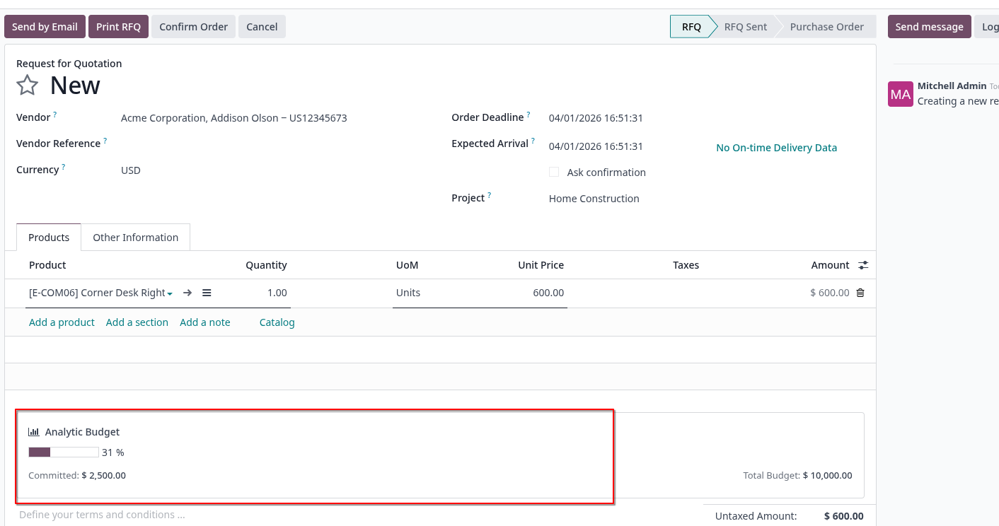
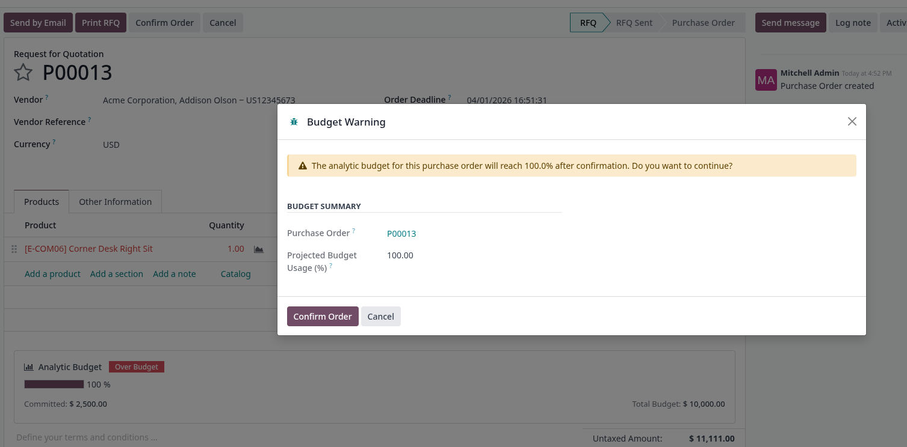

Use the standard Analytic Budgets feature to create annual budget lines for one or more projects. Each confirmed budget line sets the spending limit that will be monitored automatically on every related Purchase Order.

When creating a Purchase Order for a project that has an active budget, a dynamic progress bar appears directly on the form. It reflects the already committed amount plus the current order, so you can see the projected budget impact before confirming.

If confirming the order would exceed the available budget (progress ≥ 90 %), a warning wizard interrupts the flow and asks whether you really want to proceed. This prevents accidental overspending while still allowing authorised users to override the limit.

Progress (%) = (Committed + Pending) / Budget Total × 100
Budget Total
Sum of budget_amount from the confirmed analytic budget lines matching the order's analytic distribution and date period.
Committed Amount
Already confirmed POs + posted Vendor Bills for the analytic account (committed_amount from budget.line). Does not include the current draft order.
Pending Amount
When the order is still in draft, the current order lines amount is added as a projected impact: ∑ (price_unit × (qty − qty_invoiced)) for lines with analytic distribution.
Warning threshold
The confirmation wizard is triggered automatically when Progress ≥ 90 %. Users can still proceed by confirming the wizard, giving them full control while preventing accidental overruns.